来源：https://ka8a2qs38ja.feishu.cn/docx/ZbFEdhEwsoqaNnxXzRicjWQOnkd
大家好，我是微笑，一位来自河南的00后创业者，做抖音养生号半年，今天跟大家分享我是如何一个月赚到10w佣金的。
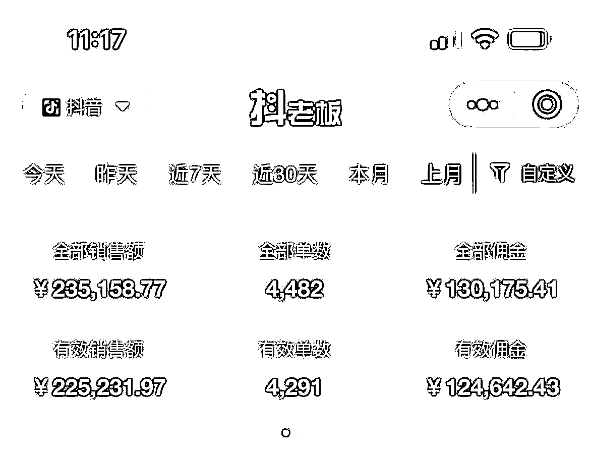
抖音养生号也叫中医号，简单来说:就是混剪中医ip大师的视频，涨到1000粉丝，开通橱窗进行带货，
主要就是借势，借中医大师的势能来进行带货赚钱，
随着人口老龄化、疫情的出现，会有更多人愿意为健康花钱，养生这个需求也已经越来越年轻化了。
2022年9月底，我报名了郭晓文、"文哥"的养生号训练营，训练营结束后，我成功的赚回了学费【2400元】，第二个月我就月入过万，第三个月、月入十万，从那开始，我就一直深耕养生号这个领域、一直到现在。
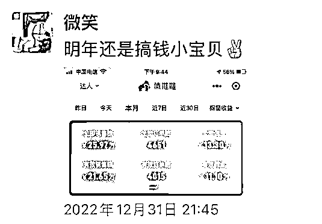
4月份定下了10w目标，并确定了主攻方向"无人直播"，短视频带货为辅，
我的这个收益是具备可复制性的，接下来呢我会毫无保留的把自己月入十万佣金的实操经验分享出来，我们先从起号开始说
我们的定位是:中医养生、针对的用户人群是"中老年人"，
那常见的起号方式有三种:
1.混剪+抠像中医大师讲课视频
这个是主流起号形式，通过大师讲解养生知识，提供价值
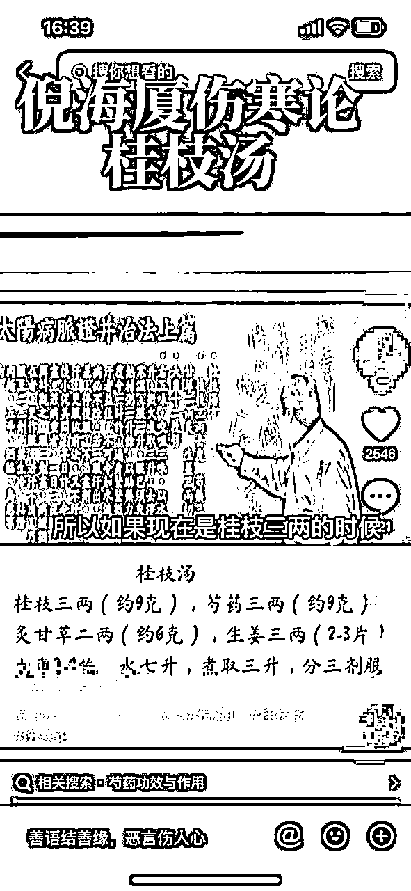
2.缅怀中医大师
一张照片+悲伤的音乐，输出情绪价值，播放量高
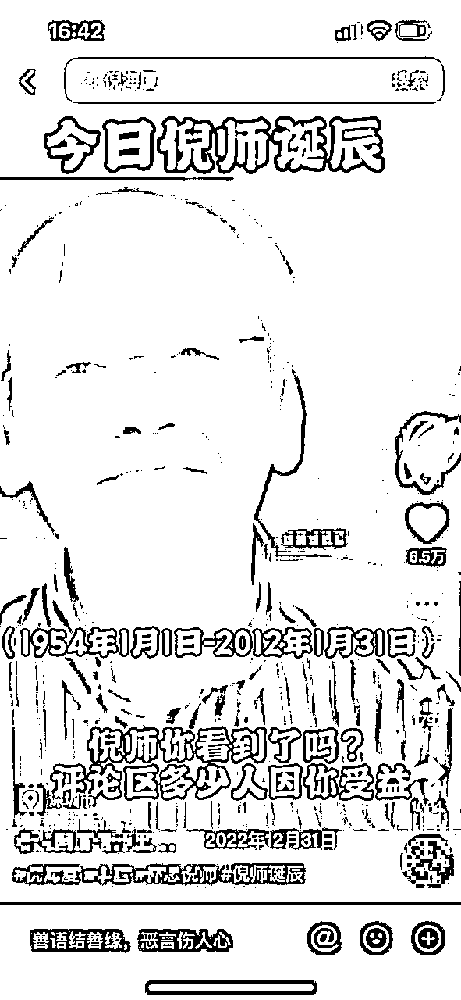
3.图文经方+大师讲课音频
中老年人对药方、秘方、经方等特别感兴趣，这类内容播放量高、涨粉也特别快，也是我最常用的一种。
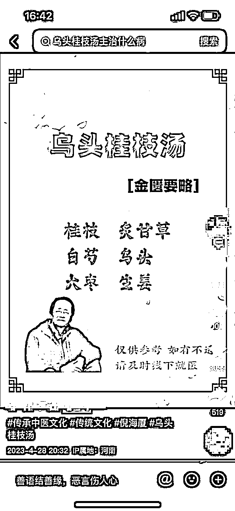
我自己一般起号是用:图文经方+大师讲课音频
上图就是标准的图文经方，就是一张图片+文字经方，音乐配上大师的讲课音频，
新账号:前面三天，每天发3条起号作品、从第四天开始每天可以发5条，也就是3+3+3+5+5+5
我这边实测是:5天就能起一个精准的中老年粉丝画像的千粉账号。
千粉后就可以开通橱窗，带货赚钱啦！ 一个账号赚不赚钱最关键的就是:"选品"
我的选品思路也会直接分享给你，你跟着做就能赚到钱。
选品主要有两个方面
1.巨量百应、创意中心的榜单
2.实时记录对标账号的橱窗销量
这个榜单需要有一个千粉号才能看，
第一步:点开商品橱窗
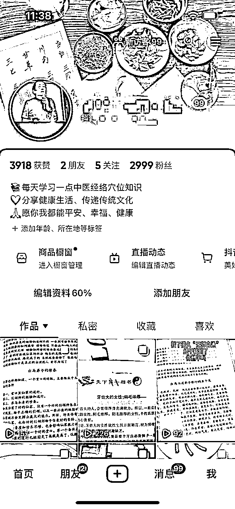
第二步:往下滑，找到创意中心、点进去
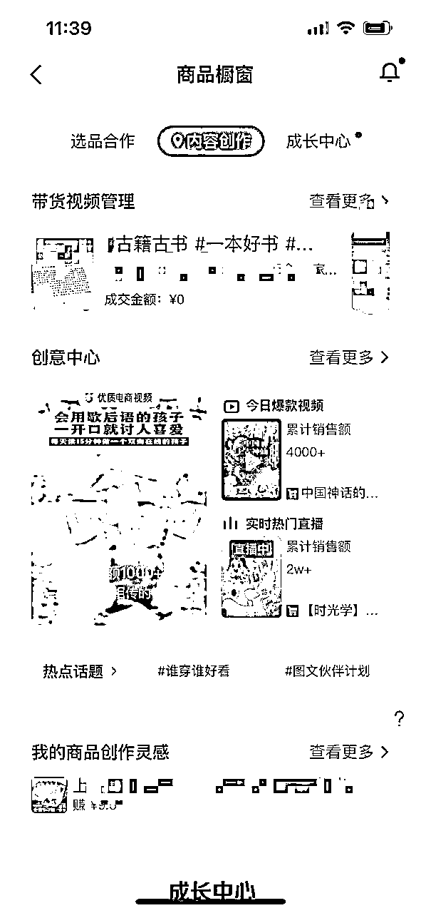
第三步:筛选条件:爆款视频~图书教育~图书~作者等级为0~近24小时
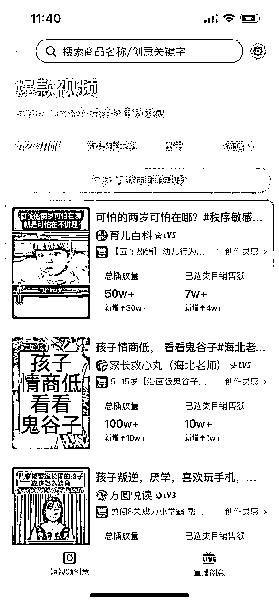
看见同行销量不错的带货视频，就可以保存下来，1:1像素级模仿，做到跟原视频一样，发到自己的账号，就能出单赚钱。
我们看巨量百应的榜单通常会遇见三种带货形式，我一一说明如何1:1像素级模仿
混剪带货通常都是中医大师讲课、要么卖汤包、要么卖书，这个简单二创一下，做到音画一致+70%的内容是自己加入的画中画原创就行
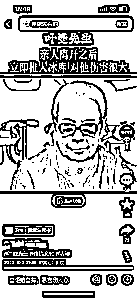
实拍:通常是实拍书籍内容、实拍自己煮汤包的过程
这个也很简单，就是把原视频用去水印软件保存下来，笨一点的方法就是:一个镜头一个镜头的模仿，对标视频怎么做，你就怎么做，
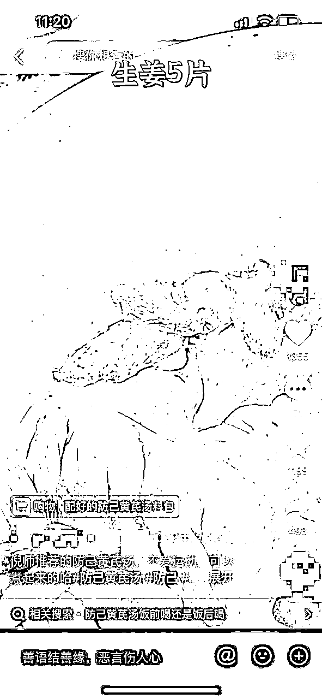
做到和原视频一模一样，60分就算合格
真人出境通常我们称之为:口播带货，这个不太好模仿，因为需要"看脸"、和一个人的镜头表现力
那不出境，就没有办法跟了嘛？ 答案是:当然有！
有两种方式可以跟上:
01.图文+音频
也就是把它带的品，做成图片，然后用他的音频带货
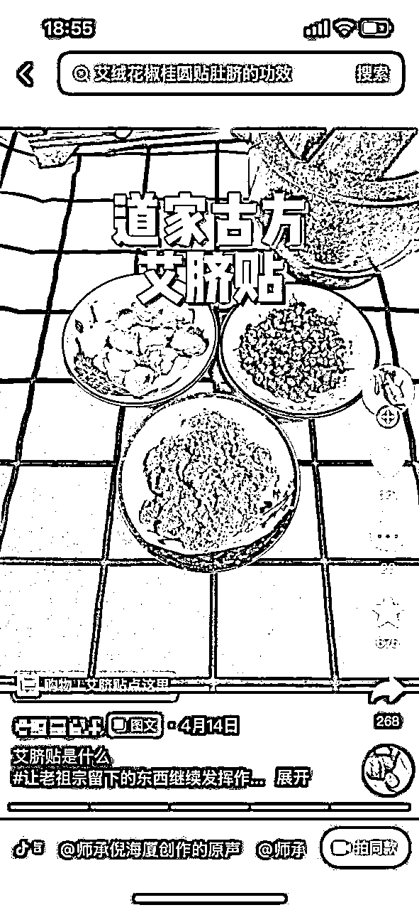
02.混剪
就是二次原创一下，音画一致+去重发布到自己的账号，【有个小风险:被原作者看到后，视频会被举报下架】
以上是常见的三种主流带货形式，无论你看榜单看见哪种，都可以按照1:1像素级模仿跟上赚钱！
通过第一步的巨量百应榜单，你可以筛选出优质的赚钱对标账号，像这类账号你就可以每天都去记录它的橱窗销量、观看它近24小时内的带货视频点赞量，发现点赞高的带货视频、我们就能判断出这是一个爆款带货视频。
我是记录了20~30个对标账号，每天都会手动记录一遍，这个动作可以让我在同行爆单时，第一时间跟上他们的爆品，
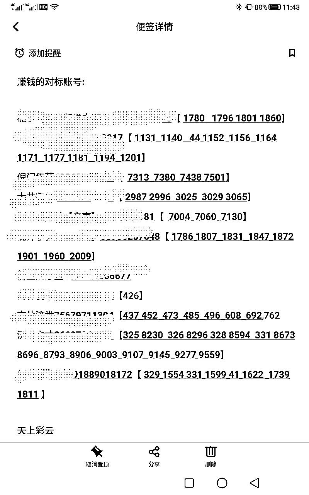
这个方法，很多月入5w、10w+的大佬都在悄悄用，而我在实操的过程中，用这个方法，也及时跟上了很多爆品，今天分享给你。
以上就是从起号~赚钱的一个闭环教学。
言归正传，回到我们的四月份
4月初我是跑了4台无人直播，当时每天都有日佣过千，运气好就大几千，这里跟你分享一个无人直播做爆的细节
当一个新号到千粉时，先上无人直播测三天，每天发5条，如果不爆再用新起的千粉账号换下来，让它去做短视频带货，用账号数量来博一个做爆的概率，我这边测试的结果是:新号做无人直播，很容易起量、出单，
这个状态一直持续到4月15号，当时的佣金是将近3w，距离10w还有很大的距离，但我丝毫不着急，保持已有的动作不变形，
我每天都会看榜单，记录赚钱的对标账号橱窗销量，于是转折点来啦！
我短视频带货都是抄对标账号的，同行账号24小时以内的高赞带货视频，我就去1:1模仿，我在4月5号时看榜单，发现了一个品，面相书籍，于是我就提前买回来了，到货之后也没有怎么理它
直到16号，发现这个面相书籍的品还没有测，我就去抄了一下之前的对标账号，1:1精细化拍摄、剪辑发布了，当天晚上我就爆了，日佣过万，
接着我就拿其它的账号全部跟上，跟了2天，我发现播放量很高、转化也很好，跟的人也特别少，这时我做了一个决定，无人直播的账号全部换成短视频带货，跟这个面相书籍的品，当时连续好几天日入过万，最高的一天，日佣2w
20号的时候，我就提前完成了目标，拿下10w佣金。
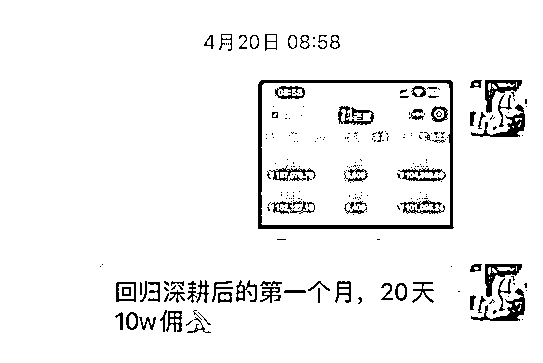
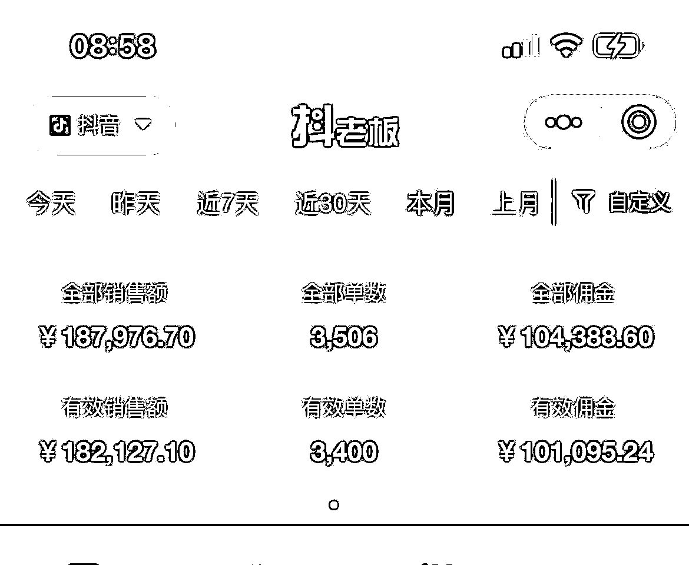
我目前是一个3人的小团队，手下带着两个人，说实话带人是一件艺术活，我以为自己把养生号项目术层面的问题全部解决，我就可以天高任鸟飞，海阔凭鱼跃，从此大展宏图，一路高歌猛进！
但现实是骨感的，虽然每天很赚钱，但不仅要解决工作上的问题，还有团队成员的情绪、想法，也要照顾好，这个过程真的很心酸……
所幸目前已经解决了，方法就是:待人如己
我会鼓励团队成员出去单干，保持极度透明、开放，让他们以最快的速度把我身上的东西全部学会，如果学会后不想出去单干，我们就可以聊一下利益分配， 这样子很真诚、大家都不累，每天工作也都很开心，
再说一下新手小白做项目会踩的坑，刚开始做短视频带货，你会经历没有播放量、不出单，每天全职干，天天大鸭蛋……
那我当时其实就挺绝望的，但有一个信念一直在支撑着我，那就是大家都是混剪实拍，带的品都是一样的，各方面都是一样的，凭什么同行能赚到钱，我不能?
于是我就每天去加行业大佬的微信，请教问题时我就发红包，基本上都会回我，就这样，每天都在跟大佬交流学习，于是我也慢慢的拿到了大佬才能拿到的结果。
我认为:每个项目都没有太大的技术含量，只要你想学、愿意深耕研究，你都能学的会，无非就是花费多少时间和精力的问题。
养生号项目如何爆单:
1.多看爆单的带货视频
如果你连高赞的带货视频长什么样子都不知道，那你做出爆单带货视频的概率肯定也不大
2.同行是最好的老师
看见优秀的同行账号，先去拆解评估一下，是否具备可复制性，如果可以， 就从各个维度1:1精细化模仿即可
3.先抄后超
一个字:抄，谁牛你就抄谁。
还有最重要的一点:我早睡早起，基本上每天晚上10点之前睡觉，早上5:30分起床， 每天我都会做运动，比如100个俯卧撑
我的生活作息规律、也有良好的生活习惯，我还特别爱读书、历史、名人自传
这些内在看不见的东西，恰恰是重要的，作息规律、良好的生活习惯，拥有这些，才是你永远的资本。
感恩生财这个大平台，我是3月份进来的，然后我就每天都在看精华帖、过往的精华帖、和圈友每天分享的帖子，
这让我的认知得到了极大的提升，今年加入生财有术，是我做出最正确的选择，没有之一！
感恩"梁靠谱"小姐姐，带我加入生财，给了我很多方向上的指导，她就是我人生路上的指南针。
感恩"郭晓文"大哥带我入门养生号。
如果有哪个地方没有写的详细，大家可以随时来问我，知无不言，言无不尽，期待更多的交流和沟通🌹